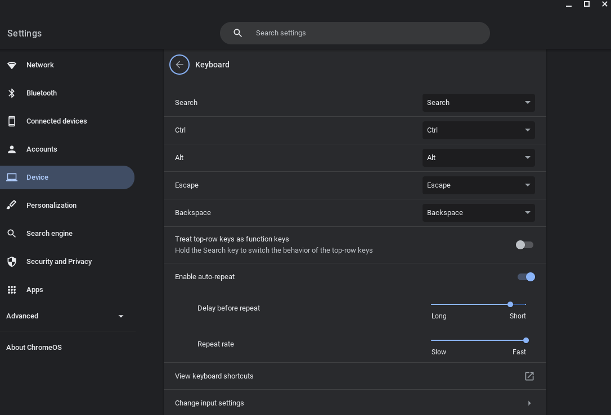

The objective of the game is to reach the red square as quickly as possible. You are a blue square, starting at the green square.
Choose a mode and a maze size. You start as soon as you move. Use the arrow or WASD keys to navigate the maze.
Each maze is randomly generated, creating a unique experience every time you play. Some mazes generated may be easier than others.
When you hit the end square, time will be called, and you will be presented with an end screen where you can go back to the main page, copy the maze and your time, or restart the maze.
Please note that this is a work in progress, there are yet more features to be added and more fixes to be implemented.
Have fun!
Note: This website is not mobile-friendly. We are working to add this.
First tip: If you're playing on One-way Speedrun mode, don't think. Move as fast as possible towards the end. If you're playing on Multi-way Explorer, choose the most optimal route, but don't spend too long to find the route.
Second tip: In order to move fast, you need to set the repeat rate of your keys as high as possible. On a chromebook, this setting can be found in Settings at this place:
Please note that this game is still under development and that these articles are subject to change without warning.
By continuing to browse and play on our website, you agree not to sue, attack, or in any way harm the physical and mental well-being of the creator and maintainer of this website. ©Tim Tran 2023